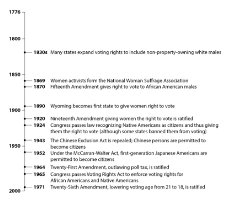

<!DOCTYPE html>
<html lang="en">

<head>
    <!-- Google tag (gtag.js) -->
    <!-- <script async src="https://www.googletagmanager.com/gtag/js?id=G-S6R9YJ1S68"></script>
    <script>
        window.dataLayer = window.dataLayer || [];
        function gtag() { dataLayer.push(arguments); }
        gtag('js', new Date());

        gtag('config', 'G-S6R9YJ1S68');
    </script>

    <meta name="google-adsense-account" content="ca-pub-5453798728297907"> -->
    <meta charset="UTF-8">
    <meta name="viewport" content="width=device-width, initial-scale=1.0">
    <title>GED - Social Studies - Test Prep 4</title>
    <link rel="stylesheet" href="../practiceStyle.css">
    <link rel="stylesheet" href="../../../style/mainStyle.css">
    <link rel="stylesheet" href="../../../style/all.min.css">
    <link rel="preconnect" href="https://fonts.googleapis.com">
    <link rel="preconnect" href="https://fonts.gstatic.com" crossorigin>
    <link
        href="https://fonts.googleapis.com/css2?family=Poppins:ital,wght@0,100;0,200;0,300;0,400;0,500;0,600;0,700;0,800;0,900;1,100;1,200;1,300;1,400;1,500;1,600;1,700;1,800;1,900&display=swap"
        rel="stylesheet">
</head>

<body>
    <section class="header">
        <nav>
            <a href="../../../index.html"></a>
            <div><a href="../social-studies-test.html" class="hover">GED - Social Studies</a> - Test</div>
        </nav>
    </section>

    <h1>Social Studies Test Preparation 4</h1>

    <section class="box">
        <div class="passage">
            <div id="quest1">
                <h3>Question 1</h3>
                            
            </div>
            <div id="quest2" class="hide">
                <h3>Question 2</h3>
                
            </div>
            <div id="quest3" class="hide">
                <h3>Question 3</h3>
                
            </div>
            <div id="quest4" class="hide">
                <h3>Question 4</h3>
                <p>Changes in market conditions often have effects on both the supply and demand of a product. If new technology cuts production costs for a product, the supply of that product will increase. If a substitute for a certain product is introduced to the market, the supply of the original product will decrease along with the demand for that original product. If the price of a complementary product falls, then the demand for the main product will increase along with the demand for the complementary product. When government regulation of a product increases, the supply of the product will decrease. When unemployment rises, supply and demand both decrease. However, when prices are expected to rise in the future, supply decreases but demand will increase. </p>
            </div>
            <div id="quest5" class="hide">
                <h3>Question 5</h3>
                <p>“Every Bill which shall have passed the House of Representatives and the Senate, shall, before it become a Law, be presented to the President of the United States; If he approve he shall sign it, but if not he shall return it, with his Objections to that House in which it shall have originated, who shall enter the Objections at large on their Journal, and proceed to reconsider it. If after such Reconsideration two thirds of that House shall agree to pass the Bill, it shall be sent, together with the Objections, to the other House, by which it shall likewise be reconsidered, and if approved by two thirds of that House, it shall become a Law. But in all such Cases the Votes of both Houses shall be determined by yeas and Nays, and the Names of the Persons voting for and against the Bill shall be entered on the Journal of each House respectively.” <br><br>
                    —U.S. Constitution, Article I, Section 7</p>
            </div>
            <div id="quest6" class="hide">
                <h3>Question 6</h3>
                <p>“It will be our wish and purpose that the processes of peace, when they are begun, shall be absolutely open and that they shall involve and permit henceforth no secret understandings of any kind. The day of conquest and aggrandizement is gone by; so is also the day of secret covenants entered into in the interest of particular governments and likely at some unlooked for moment to upset the peace of the world. . . . We entered this war because violations of right had occurred which touched us to the quick and made the life of our own people impossible unless they were corrected and the world secure once for all against their recurrence. What we demand in this war, therefore, is nothing peculiar to ourselves. It is that the world be made fit and safe to live in; and particularly that it be made safe for every peace-loving nation which, like our own, wishes to live its own life, determine its own institutions, be assured of justice and fair dealing by the other peoples of the world as against force and selfish aggression. All the peoples of the world are in effect partners in this interest, and for our own part we see very clearly that unless justice be done to others it will not be done to us. The programme of the world’s peace, therefore, is our programme; and that programme, the only possible programme.”  </p>
            </div>
            <div id="quest7" class="hide">
                <h3>Question 7</h3>
                <p class="text-indentation">The Bill of Rights is the first ten Amendments to the Constitution. It spells out Americans’ rights in relation to their government. It guarantees civil rights and liberties to the individual—like freedom of speech, press, and religion. It sets rules for due process of law and reserves all powers not delegated to the Federal Government to the people or the States. And it specifies that “the enumeration in the Constitution, of certain rights, shall not be construed to deny or disparage others retained by the people.”</p> 
                <p class="text-indentation">The First Amendment provides several rights protections: to express ideas through speech and the press, to assemble or gather with a group to protest or for other reasons, and to ask the government to fix problems. It also protects the right to religious beliefs and practices. It prevents the government from creating or favoring a religion.</p>
                <p class="text-indentation">The Second Amendment protects the right to keep and bear arms.</p>
                <p class="text-indentation">The Third Amendment prevents government from forcing homeowners to allow soldiers to use their homes. Before the Revolutionary War, laws gave British soldiers the right to take over private homes. </p>
                <p class="text-indentation">The Fourth Amendment bars the government from unreasonable search and seizure of an individual or their private property.</p>
                <p class="text-indentation">The Fifth Amendment provides several protections for people accused of crimes. It states that serious criminal charges must be started by a grand jury. A person cannot be tried twice for the same offense (double jeopardy) or have property taken away without just compensation. People have the right against self-incrimination and cannot be imprisoned without due process of law (fair procedures and trials).</p> 
                <p class="text-indentation">The Sixth Amendment provides additional protections to people accused of crimes, such as the right to a speedy and public trial, trial by an impartial jury in criminal cases, and to be informed of criminal charges. Witnesses must face the accused, and the accused is allowed his or her own witnesses and to be represented by a lawyer.</p>
                <p class="text-indentation">The Seventh Amendment extends the right to a jury trial in Federal civil cases.</p>
                <p class="text-indentation">The Eighth Amendment bars excessive bail and fines and cruel and unusual punishment.</p>                    
                <p class="text-indentation">The Ninth Amendment states that listing specific rights in the Constitution does not mean that people do not have other rights that have not been spelled out. </p>
                <p class="text-indentation">The Tenth Amendment says that the Federal Government only has those powers delegated in the Constitution.</p>
                <p class="text-indentation">If it isn’t listed, it belongs to the states or to the people.</p>
            </div>
            <div id="quest8" class="hide">
                <h3>Question 8</h3>
                <p>When police have a person in custody whom they wish to question regarding possible involvement in a crime, they are required, as a result of the Supreme Court decision in Miranda v. Arizona, to read this statement:</p>
                <p>“You have the right to remain silent. Anything you say can and will be used against you in a court of law. You have a right to an attorney. If you cannot afford an attorney, one will be appointed for you.”</p>
            </div>
            <div id="quest9" class="hide">
                <h3>Question 9</h3>
                <p>“The enumeration in the Constitution, of certain rights, shall not be construed to deny or disparage others retained by the people.”</p>
            </div>
        </div>

        <div class="multiple-choice">
            <div id="ans1">
                <p>1. Which action regarding voting happened as a result of the civil rights movement?</p>
                <label><input type="radio" name="ans1" value="A">A. ratification of the Fifteenth Amendment</label>
                <label><input type="radio" name="ans1" value="B">B. ratification of the Nineteenth Amendment</label>
                <label><input type="radio" name="ans1" value="C">C. formation of the National Woman Suffrage Association</label>
                <label><input type="radio" name="ans1" value="D">D. passage of the Voting Rights Act</label>
            </div>
            <div id="ans2" class="hide">
                <p>2. Which group received voting rights most recently?</p>
                <label><input type="radio" name="ans2" value="A">A. African American males</label>
                <label><input type="radio" name="ans2" value="B">B. 18- to 21-year-olds</label>
                <label><input type="radio" name="ans2" value="C">C. Native Americans</label>
                <label><input type="radio" name="ans2" value="D">D. women</label>
            </div>
            <div id="ans3" class="hide">
                <p>3. Which of the following shows the correct order in which the groups received voting rights?</p>
                <label><input type="radio" name="ans3" value="A">A. women, African American males, 18- to 21-year-olds</label>
                <label><input type="radio" name="ans3" value="B">B. Native Americans, African American males, 18- to 21-year-olds</label>
                <label><input type="radio" name="ans3" value="C">C. white men without property, women, Native Americans</label>
                <label><input type="radio" name="ans3" value="D">D. women, African American males, Native Americans</label>
            </div>
            <div id="ans4" class="hide">
                <p>4. While demand generally increases if consumers expect a rise in prices in the future, to which of the following goods is that dynamic least likely to apply?</p>
                <label><input type="radio" name="ans4" value="A">A. cars</label>
                <label><input type="radio" name="ans4" value="B">B. computers</label>
                <label><input type="radio" name="ans4" value="C">C. fresh food</label>
                <label><input type="radio" name="ans4" value="D">D. stock shares</label>
            </div>
            <div id="ans5" class="hide">
                <p>5. What process does this passage describe?  </p>
                <label><input type="radio" name="ans5" value="A">A. confirmation of presidential appointments</label>
                <label><input type="radio" name="ans5" value="B">B. impeachment</label>
                <label><input type="radio" name="ans5" value="C">C. naturalization</label>
                <label><input type="radio" name="ans5" value="D">D. veto and override</label>
            </div>

            <div id="ans6" class="hide">
                <p> 6. The points that President Wilson detailed in his speech were meant to structure the peace settlement ending what conflict?  </p>
                <label><input type="radio" name="ans6" value="A">A. the American Revolution</label>
                <label><input type="radio" name="ans6" value="B">B. the Civil War</label>
                <label><input type="radio" name="ans6" value="C">C. World War I</label>
                <label><input type="radio" name="ans6" value="D">D. World War II</label>
            </div>
            <div id="ans7" class="hide">
                <p>7. Which amendment in the Bill of Rights is the basis of the claim of some legal thinkers that capital punishment is unconstitutional?</p>
                <label><input type="radio" name="ans7" value="A">A. First</label>
                <label><input type="radio" name="ans7" value="B">B. Fifth</label>
                <label><input type="radio" name="ans7" value="C">C. Sixth</label>
                <label><input type="radio" name="ans7" value="D">D. Eighth</label>
            </div>
            <div id="ans8" class="hide">
                <p>8. Based on the passage, this statement is meant to protect the accused person’s rights under which amendments of the Bill of Rights?  </p>
                <label><input type="radio" name="ans8" value="A">A. First and Second</label>
                <label><input type="radio" name="ans8" value="B">B. Third and Fourth</label>
                <label><input type="radio" name="ans8" value="C">C. Fifth and Sixth</label>
                <label><input type="radio" name="ans8" value="D">D. Seventh and Eighth</label>
            </div>
            <div id="ans9" class="hide">
                <p> 9. What does the word enumeration mean? </p>
                <label><input type="radio" name="ans9" value="A">A. mentioning several things one by one</label>
                <label><input type="radio" name="ans9" value="B">B. counting how many times something appears</label>
                <label><input type="radio" name="ans9" value="C">C. explaining the meaning of something</label>
                <label><input type="radio" name="ans9" value="D">D. listing things in the order of their importance</label>
            </div>
        </div>
        
        <section class="feedback hide">
        </section>
    </section>

    <section class="buttons">
        <div id="btnPreviousPage" class="btn hide hover">Back</div>
        <div id="btnNext" class="btn hover">Next</div>        
        <div id="btnCheck" class="btn hide hover" onclick="checkAnswer()">Check Answer</div>
        <div id="btnGoBack" class="btn hide hover"><a href="../social-studies-test.html">Go Back</a></div>
        <div id="btnNextPage" class="btn hide hover"><a href="test-preparation-5.html">Next Test</a></div>
    </section>
    <script src="script/ss-test-prep.js"></script>
</body>

</html>